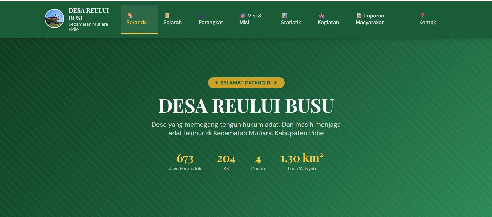
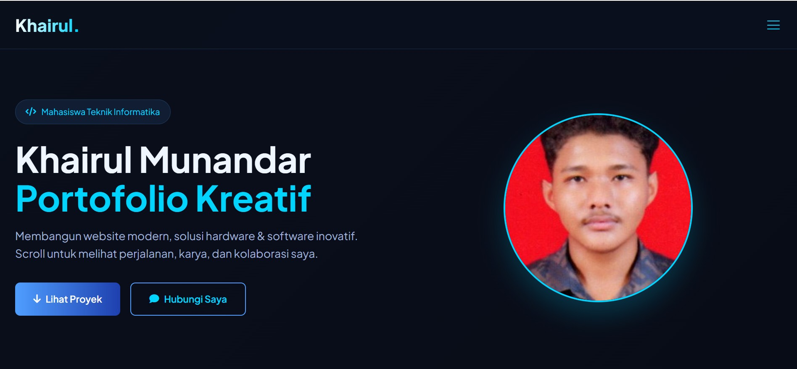
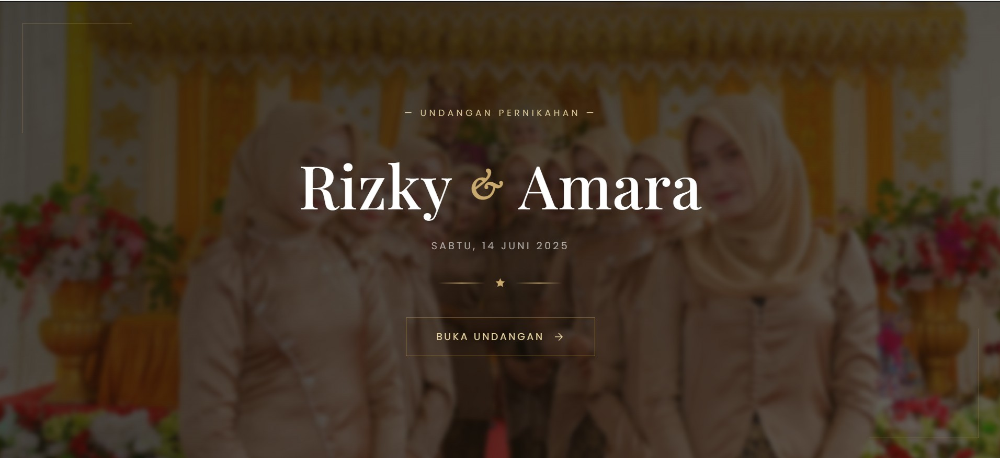
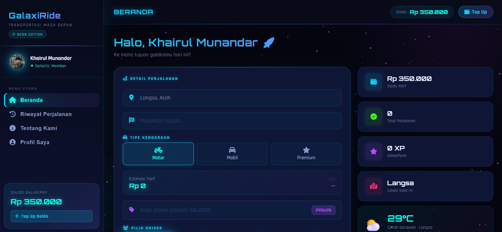
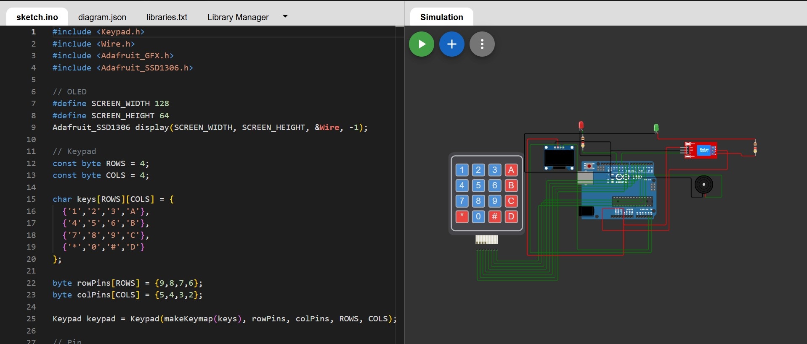
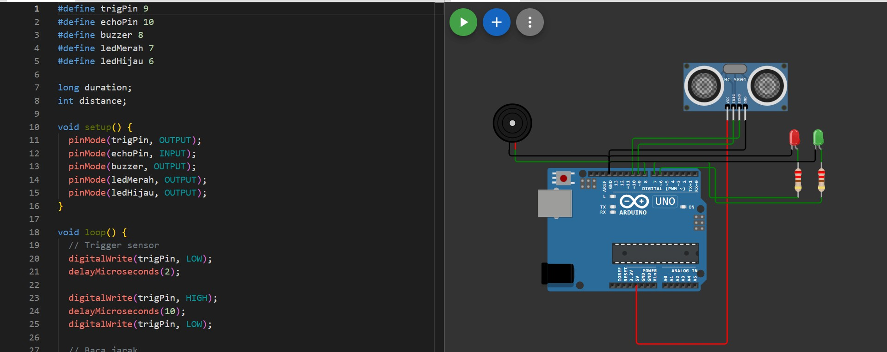

Khairul Munandar
Portofolio Kreatif
Membangun website modern, solusi hardware & software inovatif. Scroll untuk melihat perjalanan, karya, dan kolaborasi saya.

Riwayat Pendidikan
S1 Teknik Informatika
Universitas Jabal Ghafur | IPK 3.72/4.00
MAN 2 Pidie
Jurusan IPA, aktif dalam pengembangan software club.
MTsN 4 Pidie
Madrasah Tsanawiyah Negeri
SD Negeri 01 Pidie
Pendidikan Dasar
Keahlian & Tools
Pengalaman
(2025 - sekarang) — Mengelola keuangan dusun dan program pemberdayaan masyarakat.
(2024 - sekarang) — Membangun website portofolio, undangan digital, dan profil desa untuk klien lokal.
(2023 - sekarang) — Mengembangkan proyek hardware berbasis Arduino dan sensor.
Portofolio Proyek

Profil Desa Digital
Website informasi desa responsif, menampilkan potensi, struktur organisasi, dan layanan masyarakat.

Portofolio Modern
Personal branding dengan UI/UX modern, animasi halus, dan desain responsif.

Undangan Digital
Website undangan pernikahan interaktif dengan fitur RSVP, galeri foto, dan countdown.

Trasportasi online
Website Transportasi online yang mudah di gunakan dengan UI/UX yang modern.

Timer Waktu untuk Menghidupkan Lampu
Sistem IoT berbasis Arduino dan relay untuk mengontrol waktu hidup lampu.

Timer Waktu untuk Mobil Parkir
Sistem IoT berbasis Arduino dan sensor infrared untuk membantu mobil parkir.